- 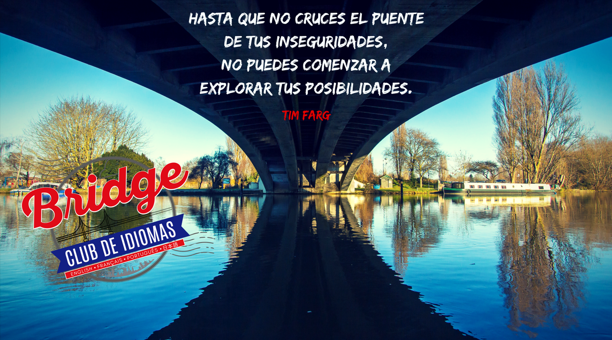
-

- 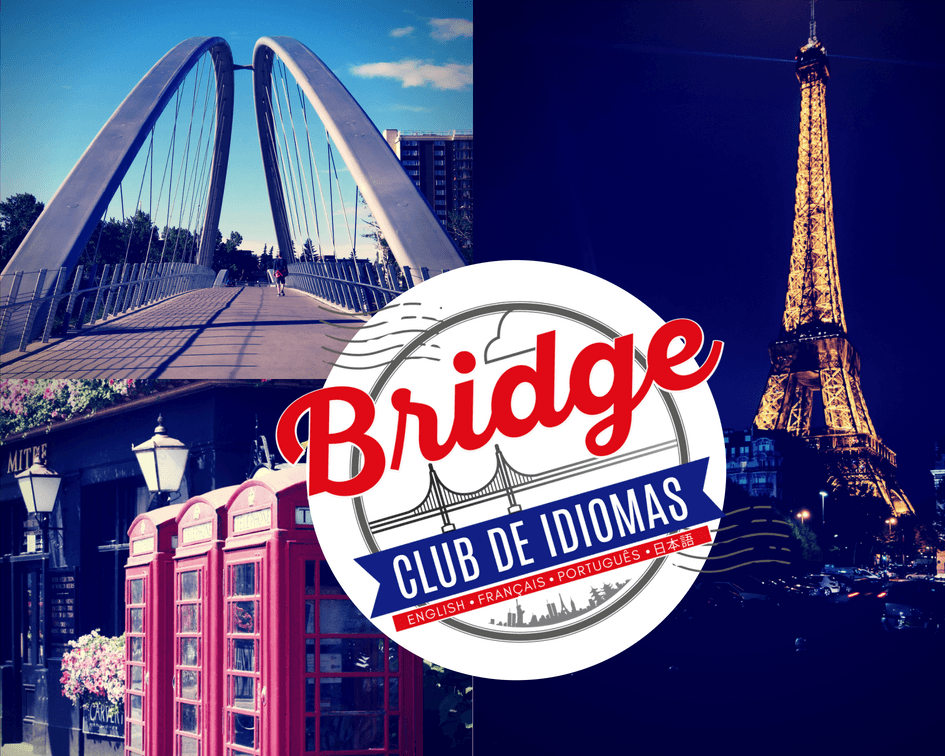
EL INGLÉS no es como lo pintan… montado en buses rojos o dentro de una cabina de telefónica del mismo color.
EL INGLÉS es actual, es presencia en el futuro, es trabajo, estudio, viajes, diversidad cultural, más y mejores oportunidades…
EL INGLÉS es necesario, en ocasiones es vital si queremos ser parte activa del mundo moderno, el INGLÉS nos abre puertas…
EL INGLÉS es tan importante que podríamos afirmar que está en todas partes, en la música, en la televisión, en el cine, en la tecnología, en los videos juegos…
Según estudios científicos, el aprender idiomas contribuye a aumentar nuestro autoestima, la confianza en nosotros mismos, a entrenar nuestro cerebro, a tomar decisiones, a abrir nuestra mente, a estimular nuestra creatividad, a solucionar problemas el INGLÉS entonces sirve para nuestra superación personal.
Bridge Club de Idiomas tiene un programa de Inglés apropiado para ti. Un programa de acuerdo a los requerimientos del gobierno colombiano para enseñar y aprender una lengua extranjera. Un programa diseñado para desarrollar las competencias y habilidades comunicativas que como seres sociales poseemos. Un programa hecho favoreciendo todas las inteligencias y todos los estilos de aprendizaje que como humanos nos caracterizan.
Por lo tanto, te invitamos a conocer, al famoso INGLÉS.
¡Ven y danos la oportunidad de ayudarte a atravesar el PUENTE hacia el comienzo del bilingüismo y el mundo entero!
Expresiones como amour, je t'aime y chérie son las responsables de que en casi todos los países, el francés haya conseguido su corona como el idioma del amor y sea el rey indiscutible.
Romántico, seductor, apasionado, melódico si así es el Francés es un idioma vivo que se desarrolla en el mundo.
El Francés es actualmente el quinto idioma más hablado en el mundo, con 274 millones de hablantes.
El Francés es el segundo idioma estudiado como lengua extranjera, después del Inglés. El Francés es la tercera lengua de negocios en el mundo y la cuarta lengua en internet.
El idioma Francés abre ventanas, nuevas culturas, países y que decir de tus metas o aspiraciones es una ventaja para tus estudios, para tu vida personal, para tu futuro profesional y para el acceso a la información.
Según algunos estudios científicos, aprender una lengua extranjera ayuda a aumentar la autoestima, a entrenar el cerebro y a estimular la creatividad. Es por esto que te invitamos a que conozcas el famoso Francés.
Bridge club de idiomas tiene un programa de Francés diseñado especialmente para ti. Un programa diseñado según los requisitos del gobierno colombiano para enseñar y aprender un idioma extranjero. Un programa diseñado para desarrollar las competencias y las habilidades comunicativas que poseemos como seres humanos. Un programa hecho para favorecer todas las inteligencias y todos los estilos de aprendizaje.
¡Ven y danos la oportunidad de ayudarte a atravesar el PUENTE hacia el comienzo del bilingüismo y el mundo entero!
Esta modalidad de estudio te ofrece acompañamiento continuo por nuestros Facilitadores guiándote paso a paso en el desarrollo comunicativo de una segunda lengua extranjera.
Conoce MasEsta modalidad de estudio te ofrece acompañamiento continuo por nuestros Facilitadores guiándote paso a paso en el desarrollo comunicativo de una segunda lengua extranjera, con la diferencia que moldearemos nuestro programa a tus necesidades personales, laborales, profesionales, académicas… en fin para lo que necesites.
Conoce MasSi tu meta es la de presentar exámenes internacionales para alcanzar tus logros académicos, laborales o personales, si quieres postularte a becas, conocer el mundo, sus cultura, laborar en otros países los exámenes internacionales te ayudan a lograrlo es por eso que Bridge te ofrece está alternativa.
Conoce MasSi tu problema es el tiempo, los desplazamientos, el sitio donde te encuentras, los espacios que dispones en el día, está es la modalidad que te conviene, solo necesitas tener o abrir una cuenta en Skype y listo, los facilitadores en común acuerdo contigo se conectarán y guiaran tu proceso según tus necesidades ya sea de forma personalizada y/o para exámenes internacional.
Conoce Mas¿Te dejaron tareas, trabajos, actividades que debes desarrollar en Inglés y no sabes ni por dónde comenzar? Bridge te apoya y te ofrece asesorías por hora, para que puedas despegar dudas, para que replantees tus ideas y puedas presentarte como un Crack.
Conoce MasSe aproxima el ICFES? ¿Y tú fuerte no es Inglés? Ven a Bridge y te ayudaremos a mejorar tu puntación en esta área básica de la prueba del estado. Recuerda que el área de Inglés ya no es electiva y esta afecta drásticamente tu resultado final y este debe abrir oportunidades académicas no cerrarlas, así que ponte pilas de la mano de nuestros facilitadores.
Conoce MasDeseas aprovechar tus vacaciones de mitad y fin de año incursionando en otros idiomas o simplemente fortalecer alguno de los temas propuestos para estos cursos. Entonces debes estar atento, Bridge abre convocatorias dos veces al año cuatro semanas antes de dar inicio a las vacaciones.
Conoce Mas¿Tienes documentos en Inglés o Francés que debas o necesites traducirlo al Español o el acompañamiento de un traductor a alguna reunión? nuestros facilitadores te ayudarán agilidad, discreción y completa confidencialidad garantizada.
Conoce MasTienes conocimiento del idioma Inglés y/o Francés, ¿Pero no cuentas con espacios donde puedas practicarlos? Los talleres y clubs te esperan, estas sesiones están dedicadas a fortalecer las competencias comunicativas de forma lúdica.
Conoce MasProyecto Interno Social (PIS) es nuestra iniciativa, nuestro componente social, nuestro granito de arena como apoyo a los estudiantes de colegio de las localidades de Bogotá o la sabana y que por su situación económica no les ha permitido estudiar idiomas. Si tú eres uno de ellos que conoce la importancia y las oportunidades que se te darán al dominar un segundo idioma participa. (Cupos limitados)
Conoce MasEsta modalidad de estudio te ofrece acompañamiento continuo por nuestros Facilitadores guiándote paso a paso en el desarrollo comunicativo de una segunda lengua extranjera.
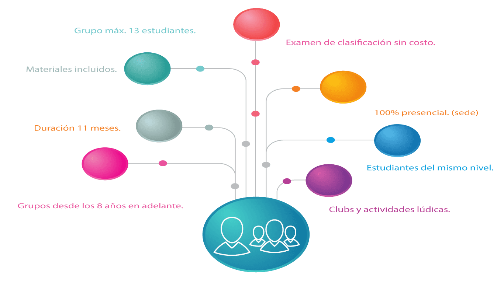 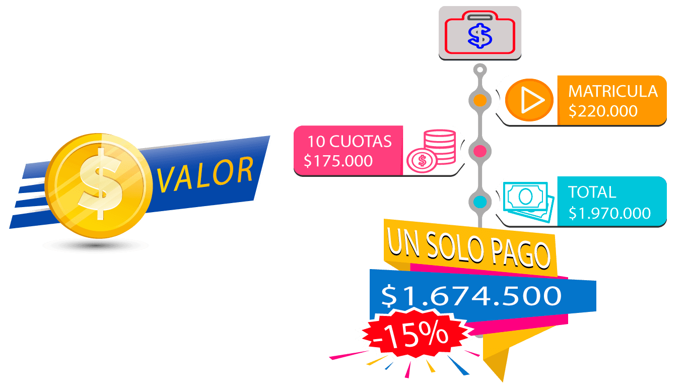Esta modalidad de estudio te ofrece acompañamiento continuo por nuestros Facilitadores guiándote paso a paso en el desarrollo comunicativo de una segunda lengua extranjera, con la diferencia que moldearemos nuestro programa a tus necesidades personales, laborales, profesionales, académicas… en fin para lo que necesites .
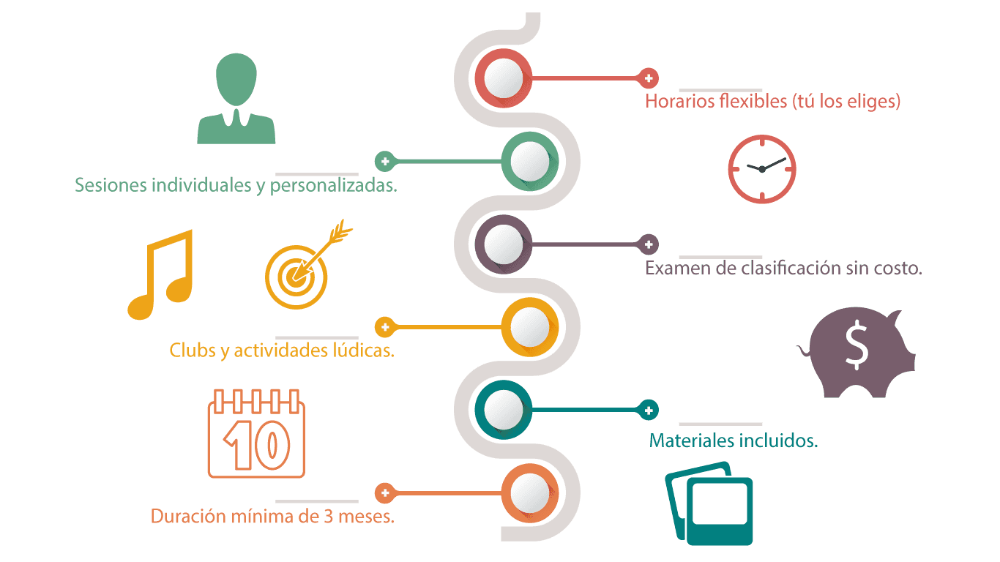 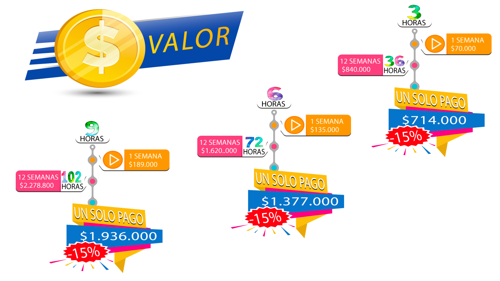Si tu meta es la de presentar exámenes internacionales para alcanzar tus logros académicos, laborales o personales, si quieres postularte a becas, conocer el mundo, sus cultura, laborar en otros países los exámenes internacionales te ayudan a lograrlo es por eso que Bridge te ofrece está alternativa, dependiendo el nivel en el que te encuentres, podremos establecer la ruta de trabajo contigo, asesorarte y orientarte en el proceso que debes realizar y obviamente prepararte en el nivel que exige el examen al que desees presentarte, teniendo en cuenta los parámetros, las normas y las competencias comunicativas que se rigen en la actualidad.
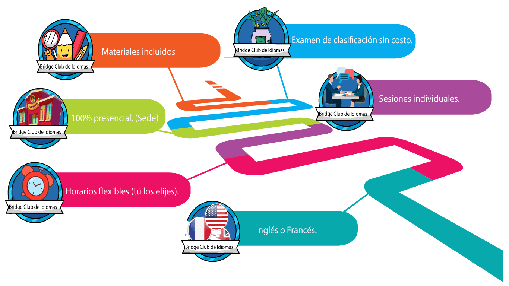Si tu problema es el tiempo, los desplazamientos, el sitio donde te encuentras, los espacios que dispones en el día, está es la modalidad que te conviene, solo necesitas tener o abrir una cuenta en Skype y listo, los facilitadores en común acuerdo contigo se conectarán y guiaran tu proceso según tus necesidades ya sea de forma personalizada y/o para exámenes internacional.
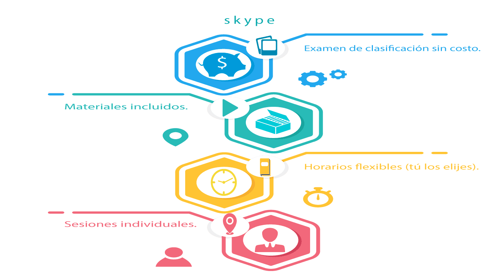¿Te dejaron tareas, trabajos, actividades que debes desarrollar en Inglés y no sabes ni por dónde comenzar? Bridge te apoya y te ofrece asesorías por hora, para que puedas despegar dudas, para que replantees tus ideas y puedas presentarte como un Crack.
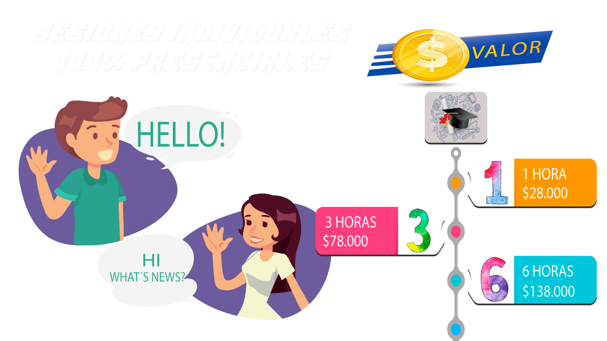¿Se aproxima el ICFES? ¿Y tú fuerte no es Inglés? Ven a Bridge y te ayudaremos a mejorar tu puntación en esta área básica de la prueba del estado. Recuerda que el área de Inglés ya no es electiva y esta afecta drásticamente tu resultado final y este debe abrir oportunidades académicas no cerrarlas, así que ponte pilas de la mano de nuestros facilitadores.
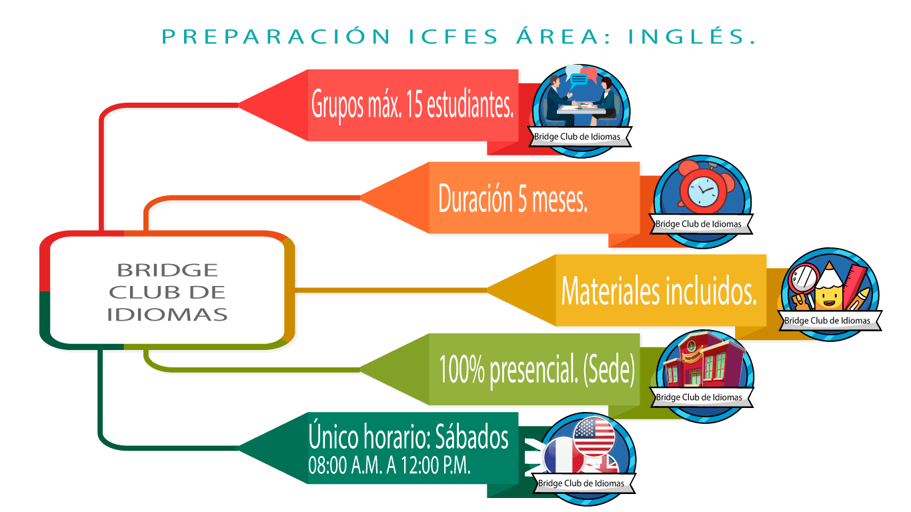Tienes conocimiento del idioma Inglés y/o Francés, ¿Pero no cuentas con espacios donde puedas practicarlos? Los talleres y clubs te esperan, estas sesiones están dedicadas a fortalecer las competencias comunicativas de forma lúdica utilizando como herramientas de enseñanza los juegos, karaoke, carreras de observación, actividades culturales, juegos de rol, películas… cubriendo todos los estilos de aprendizaje. Definitivamente no todos aprendemos de la misma forma Bridge encontrará la tuya.
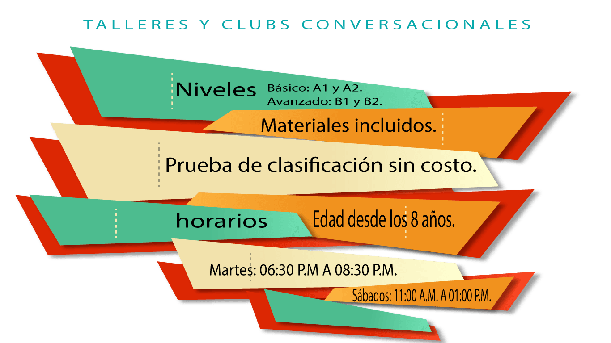 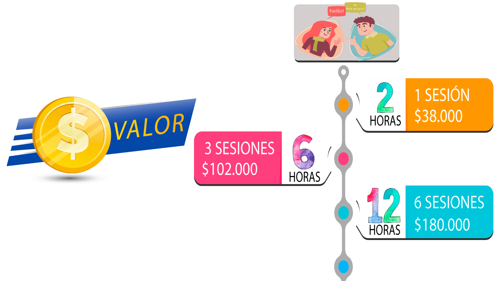Deseas aprovechar tus vacaciones de mitad y fin de año incursionando en otros idiomas o simplemente fortalecer alguno de los temas propuestos para estos cursos. Entonces debes estar atento, Bridge abre convocatorias dos veces al año cuatro semanas antes de dar inicio a las vacaciones, debes estar pendiente de los temas, el idioma, inscribirte y listo. Los cursos pueden ser de Inglés, Francés, Japonés, Portugués entre otros.
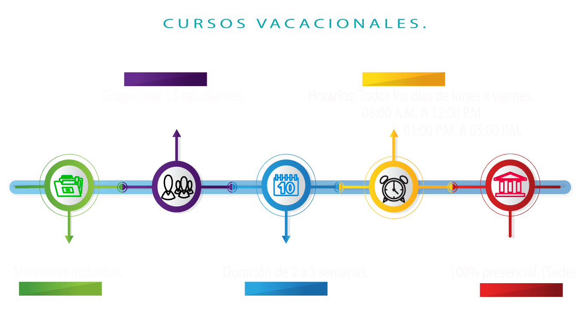 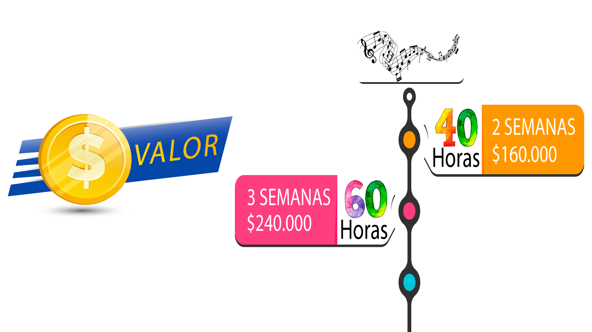Proyecto Interno Social (PIS) es nuestra iniciativa, nuestro componente social, nuestro granito de arena como apoyo a los estudiantes de colegio de las localidades de Bogotá o la sabana y que por su situación económica no les ha permitido estudiar idiomas. Si tú eres uno de ellos que conoce la importancia y las oportunidades que se te darán al dominar un segundo idioma participa. (Cupos limitados).
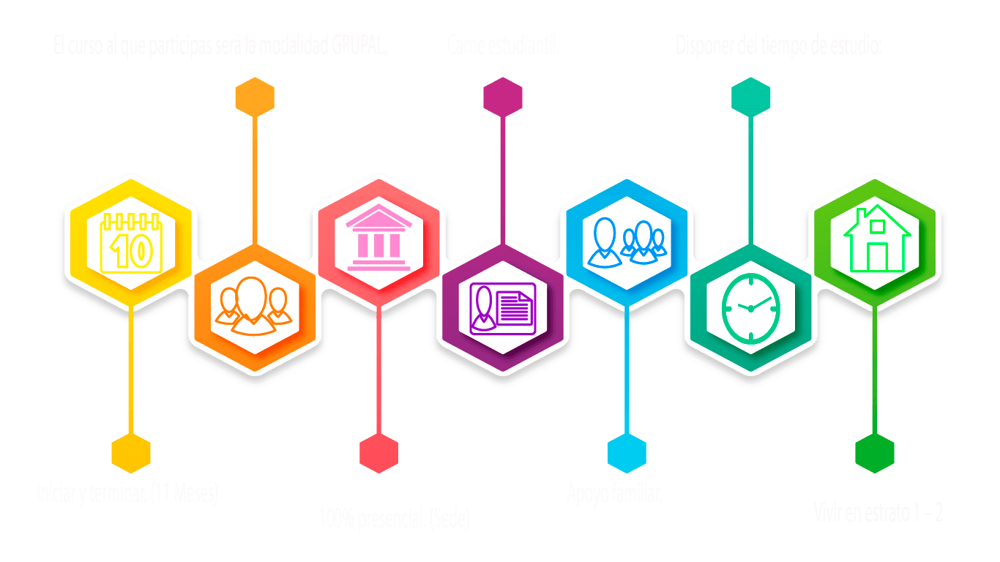 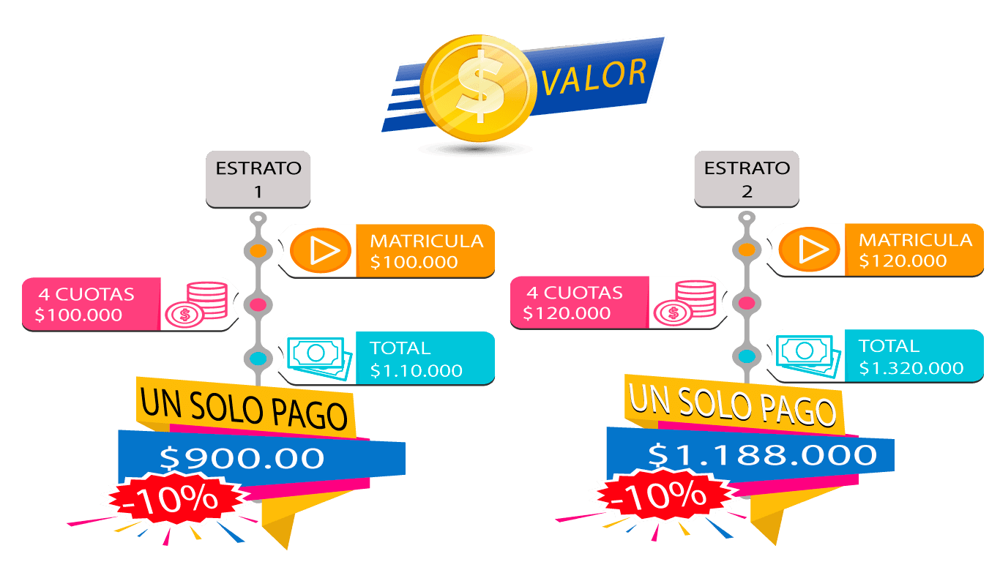Estoy en Bridge Club de Idiomas, porque me gusto la dinámica académica, deseo manejar perfecto un nuevo idioma y aquí manejan técnicas de aprendizaje.
Empecé sin saber nada y aquí he aprendido a hablar muy bien. Mi principal sueño es viajar y para hacerlo posible, tengo que desenvolverme en el idioma.
Bridge Club de Idiomas, ha sido una puerta al mundo. Me ha abierto grandes oportunidades y ha quitado el miedo a expresarme. Ha sido todo un reto porque me gusta aprender cosas nuevas.